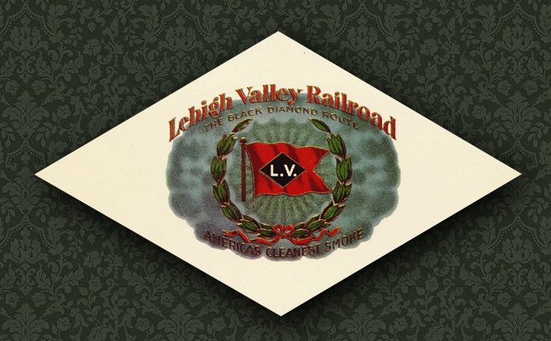

|
Black Diamond Express. 1896  Page
Two.
While
I was researching the original 5 Atlantics, I came across a lot of
The
LV owned a total of 39 4-4-2 Alantic locomotives, built by
The earliest were the F1 class, the original five Atlantics discussed on the previous page, built by Baldwin in 1896. And
the last were the five engines of the F6 class, built by the LV
The
LV did a system-wide renumburing of all its locomotives in 1905.
The
F5 class was rebuilt from some of the F4 class locomotives. (when?)
The F6 class, being built in 1910-11, after the 1905 renumburing, only had the one number series. Its
possible, and likely, that some of the numburing data below is
incorrrect,
and some info is also missing. I hope to eventually fill-in all this
information.
If you know anything, or know where data might be found, please let me
know! You can email me, or join the discussion
on railfan.net.
F1 class.
Baldwin
Builders photo - 1896
F1
class. Five locomotives, Baldwin, 1896.
Additional
F1 Class data, from "Jasper
N. Haines' Scrapbook"
F2 class.
Old
postcard of F2 class 2331 - originally No. 670 - renumbured to 2331 in
1905
F2
class. Four locomotives, Baldwin, 1898.
LV
674 - new in 1900.
F4 class. Eight locomotives, Baldwin, 1900. Clearly
the nine new Atlantics were working out well, because after another two
years, at the
Although I dont have the driver size listed for F2 and F4 class, it is likely that the first three classes of LV atlantics: F1
- 1896
Were
all very similar, nearly identical, perhaps with only minor
evolutionary
changes over the four year building span. So its likely, but not
confirmed,
that the F2 and F4 class also had 75.5"
Baldwin
Builders photo - 1903
Above is the builders photo of 681,
new in 1903. Below is the same locomotive,
wearing her post-1905 number, 2400, a beautiful photo of the Black Diamond Express in Sayre:
Richard Palmer Collection.
F3 class. Seventeen locomotives, Baldwin and Alco, 1903 - 1911 Between 1903 and 1911, the LV gradually and continuously increased its 4-4-2 roster. For
some as-yet unknown reason, even though the locomotives of the F3 class
were built after the F4 class, the class numbers were not
chronological..F4
class came first, then F3 class.
F1
- 1896
The class numbers probably were designated at the 1905 renumburing. I dont know what classes the locomotives were in before 1905. Thanks
to
"Jasper
N. Haines' Scrapbook" we know that of the seventeen total
locomotives
in the F3 class, twelve were built by Baldwin, and five were built by
Alco..(the
only five LV Atlantics built by Alco) but we dont yet know which
twelve were Baldwins, and which five were Alcos,
Notes on the F3 Class. The
"Archer Book" says on page 181 about LV Atlantic No. 681: "The Sayre
Shops
turned out
Based
on that info, I originally assumed the entire F3 class was built at
Sayre.
but the date,
Check
out the builders plate on 681! clearly a round Baldwin plate, the
caption
in the Archer book is wrong, the F3 class were Baldwins, (and Alcos)
not
Sayre-built.
Another book, "The Handsomest Trains in the World, - Passenger Service on the Lehigh Valley Railroad" says (page 51) that F3 2410 was built in 1906. Assuming this is true, then the F3 class was built over several years, and also built before and after the 1905 renumburing! which means some of the F3 class, built before 1905, arrived in the 600-series, and others, built after 1905, arrived new in the 2400 series. Having only build dates for two locomotives, I cant yet say exactly where that transition occured. Hopefully more information will fill in the gaps on the F3 roster. Additional
F3 Class data, from "Jasper
N. Haines' Scrapbook"
F5 class. Five locomotives, rebuilt from F4-class locomotives at Sayre. In
19?? the LV
took
five of the older F4 class Baldwins, originally built in 1900, and
rebuilt
But
only five locomotives are recorded in the F5 class, and eight
locomotives
originally existed in the F4 class. What happened to the other three F4
locomotives? either three of the F4 locomotives were not rebuilt, and
carried
on until the end of their careers as unrebuilt F4's,
It
is also not yet known which five of the F4 class became the F5
class
rebuilds.
The
"Jasper
N. Haines' Scrapbook" page lists some roster info for Class
F5,
but I believe that data is an incorrect mixture of both F4 and F5 data.
Bud
Laws collection, from North
East Rails - used with permission, thanks!
F6 class. Five locomotives, Built by the LV at Sayre in 1910-1911. And
now we come to the final class of LV Atlantics, the F6 Class.
Additional
F6 Class data, from "Jasper
N. Haines' Scrapbook"
An
interesting note about "The smallest locomotive ever built at the Sayre
Shops"
I
believe the figures in the cab and doorway are dolls, not real children.
(a clearer version of that same photo can be found on page 199 of the Archer book) It's
a remarkably detailed model! appears to be accurate to the prototype in
all respects.
Wouldnt
it be amazing if this model still existed?!
I cant imagine why anyone would deliberately destroy such an amazing model, the only reason I can think of why this model might not still exist, would be if it was donated to a WWII scrap drive, much like the LV inspection loco "Dorothy". If
anyone is reading this who happens to be a Mason, is there any way
someone
could contact the Elks about this?
I might ask the Sayre, PA Elks lodge, it looks like they still exist. A
photo of the actual No. 2479 can be seen here.
|
||



{kind=link}
{kind=link}